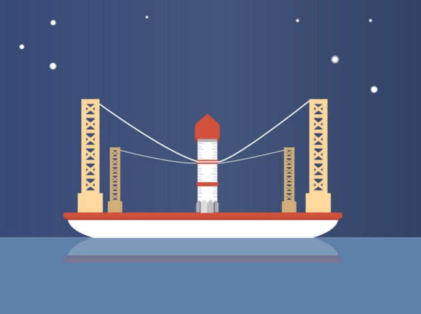
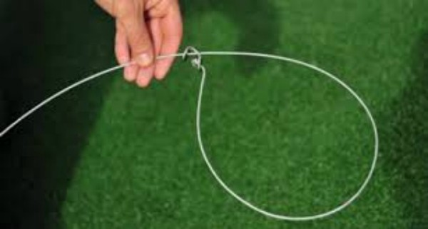

Som en snare-felle feller du raketten når den treffer landings-plattformen, raketten blir stabilisert av stramme nok kabler.

Den midterste ring-kabelen, som fanger raketten, kan polstres med et mykt materiale for å bevare/beskytte det ytre laget av raketten.

